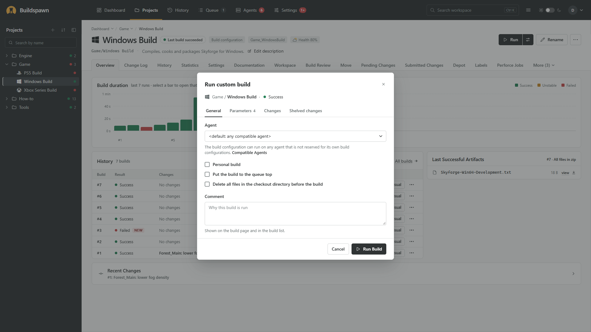

Run a build with different parameters
Start one build with other values than the defaults, for example a Shipping build instead of Development, without changing the build configuration.
Before you start
- A build configuration with at least one parameter that people may set. See Parameters. In this guide it is Game / Windows Build, with the parameters
CONFIG(defaultDevelopment) andCLEAN(defaultfalse). - The permission to run the build configuration, for example through the Developer role.
Steps
- Open the build configuration, for example Game › Windows Build.
- Click the small button with the sliders, right beside Run. Its tooltip says Run custom build. If a parameter is set to Prompt, click Run… instead.
- Open the Parameters tab. The number on the tab says how many parameters you can set.
- Change
CONFIGtoShipping. Type it, or pick it from the list if the parameter is a list. - Leave the others as they are. To go back to a default, click Reset beside the field.
- For a password parameter, click Change Password and type the value for this build only. The stored value stays as it is.
- On the General tab, you can write a Comment, such as
Shipping check for the demo. It shows on the build page and in the build list. - Click Run Build.

Change the parameters of a build that already ran
To run an older build again with one value changed, use Re-run with changes. Open the build, click the button with the sliders beside Re-run, open Parameters (filled in from that build), change a value and click Re-run. See Re-run a build.
Check it worked
- Open the new build and its Summary. The Parameters row lists the values it used, for example
CONFIG = Shipping. A password shows as****. - Click the Parameters tab for the full list.
- In the Console Output, find the line of your step that prints the configuration.
- Your comment is shown on the build page.
Problems and fixes
| Problem | What to do |
|---|---|
| There is no Parameters tab. | The build configuration has no parameters that people may set, or they are all hidden. Add one under Settings › Parameters, and set its display so it is not hidden. |
| A field is read only. | The parameter is set to read only. A project administrator can change that on its settings. |
| The dialog refuses my value. | The parameter has a rule, for example a list of allowed values or a text that must not be empty. The dialog opens on the Parameters tab and says why. |
| The dialog refuses to change a value and mentions script text or Vault. | Only people who can configure the build configuration may change values that end up in script text, and Vault values. |
| The step still used the default. | Check that the step reads the value by its exact name, for example %CONFIG%. Names are case sensitive. |
Next steps
- The Run dialog: every option.
- Parameters: the types and how to add them.
- Re-run a failed build from the failing step